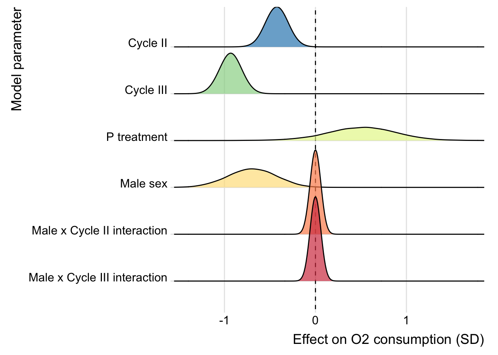
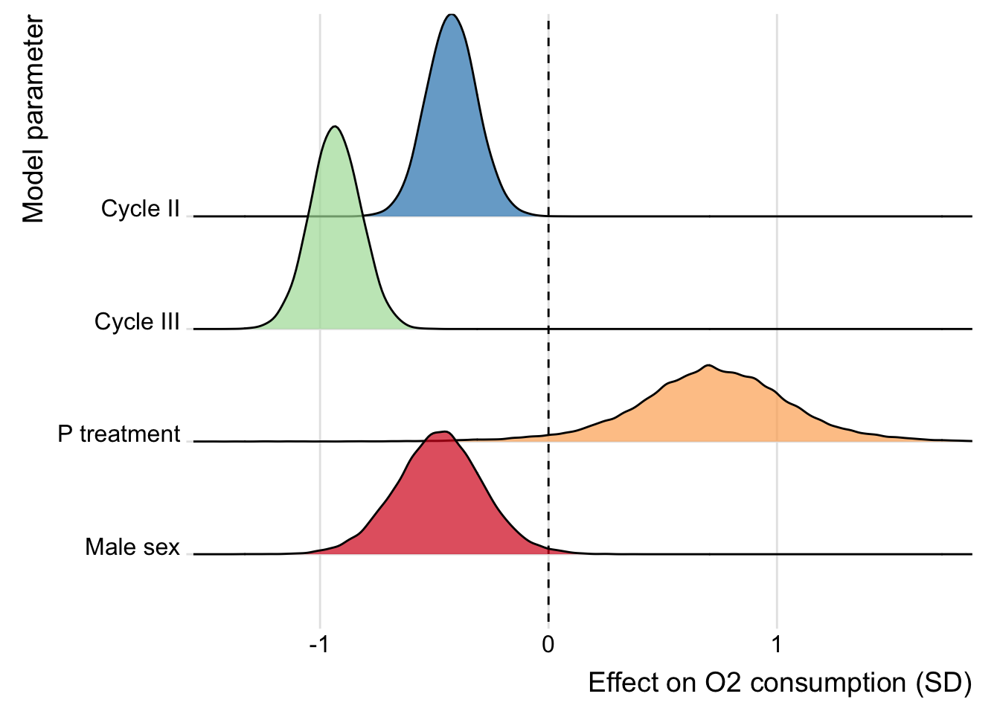

Statistical analysis
Last updated: 2020-03-03
Checks: 6 1
Knit directory: respiration_exp_evolution/
This reproducible R Markdown analysis was created with workflowr (version 1.6.0). The Checks tab describes the reproducibility checks that were applied when the results were created. The Past versions tab lists the development history.
The R Markdown file has unstaged changes. To know which version of the R Markdown file created these results, you’ll want to first commit it to the Git repo. If you’re still working on the analysis, you can ignore this warning. When you’re finished, you can run wflow_publish to commit the R Markdown file and build the HTML.
Great job! The global environment was empty. Objects defined in the global environment can affect the analysis in your R Markdown file in unknown ways. For reproduciblity it’s best to always run the code in an empty environment.
The command set.seed(20190703) was run prior to running the code in the R Markdown file. Setting a seed ensures that any results that rely on randomness, e.g. subsampling or permutations, are reproducible.
Great job! Recording the operating system, R version, and package versions is critical for reproducibility.
Nice! There were no cached chunks for this analysis, so you can be confident that you successfully produced the results during this run.
Great job! Using relative paths to the files within your workflowr project makes it easier to run your code on other machines.
Great! You are using Git for version control. Tracking code development and connecting the code version to the results is critical for reproducibility. The version displayed above was the version of the Git repository at the time these results were generated.
Note that you need to be careful to ensure that all relevant files for the analysis have been committed to Git prior to generating the results (you can use wflow_publish or wflow_git_commit). workflowr only checks the R Markdown file, but you know if there are other scripts or data files that it depends on. Below is the status of the Git repository when the results were generated:
Ignored files:
Ignored: .DS_Store
Ignored: .Rhistory
Ignored: .Rproj.user/
Ignored: data/.DS_Store
Untracked files:
Untracked: Supplementary tables and figures.docx
Untracked: data/model_selection_table.rds
Untracked: data/top_model_files.rds
Untracked: manuscript.docx
Untracked: output/temp_files/
Untracked: ~$nuscript.docx
Unstaged changes:
Modified: .Rprofile
Modified: .gitignore
Modified: analysis/statistics.Rmd
Modified: output/Figure 2.pdf
Modified: output/brms_SEM.rds
Note that any generated files, e.g. HTML, png, CSS, etc., are not included in this status report because it is ok for generated content to have uncommitted changes.
These are the previous versions of the R Markdown and HTML files. If you’ve configured a remote Git repository (see ?wflow_git_remote), click on the hyperlinks in the table below to view them.
| File | Version | Author | Date | Message |
|---|---|---|---|---|
| Rmd | 2752352 | lukeholman | 2020-01-17 | Almost reaedy |
| html | 2752352 | lukeholman | 2020-01-17 | Almost reaedy |
Load R packages
library(tidyverse)
library(gridExtra)
library(brms)
library(RColorBrewer)
library(glue)
library(kableExtra)
library(tidybayes)
library(bayestestR)
library(MuMIn)
library(glue)
library(ggridges)
library(future)
library(future.apply)
options(stringsAsFactors = FALSE)Load respirometry data
respiration <- read_csv("data/2.metabolic_rates.csv") %>%
rename(SELECTION = `?SELECTION`)Draw the flow diagram
DiagrammeR::grViz('digraph {
graph [layout = dot, rankdir = LR]
# define the global styles of the nodes. We can override these in box if we wish
node [shape = rectangle, style = filled, fillcolor = Linen]
"Metabolic\nrate" [shape = oval, fillcolor = Beige]
"Metabolic\nsubstrate" [shape = oval, fillcolor = Beige]
"Other factors\n(e.g. physiology)" [shape = oval, fillcolor = Beige]
# edge definitions with the node IDs
"Mating system\ntreatment (M vs P)" -> {"Other factors\n(e.g. physiology)", "Body mass" , "Activity"} -> {"Metabolic\nrate", "Metabolic\nsubstrate"}
{"Metabolic\nrate"} -> "Oxygen\nconsumption"
{"Metabolic\nsubstrate"} -> "Respiratory\nquotient (RQ)"
}')Figure 1: Directed acyclic graph (DAG) showing the key causal relationships that we hypothesised a priori between the measured variables (squares) and latent variables (ovals). This DAG motivated the Bayesian structural equation model discussed in the Methods and Results, which attempts to decompose the effects of treatment on respiration (measured via O2 and CO2 flux, and their ratio, RQ) into paths that travel via body mass, activity, or other unmeasured factors such as physiology.
Inspecting the raw data
Selection treatment has affected activity and body size
There is a strong effect of selection treatment on activity in both sexes, and an effect of selection on female body size.
respiration %>%
filter(CYCLE == "I") %>%
mutate(`Body weight` = scale(BODY_WEIGHT),
`Activity level` = scale(ACTIVITY)) %>%
gather(trait, value, `Body weight`, `Activity level`) %>%
ggplot(aes(SEX, value, colour = SELECTION)) +
stat_summary(position = position_dodge(0.4), size = 0.3) +
facet_wrap(~ trait) +
scale_color_brewer(palette = "Set1", direction = -1)
| Version | Author | Date |
|---|---|---|
| 2752352 | lukeholman | 2020-01-17 |
Fit the first brms models, ignoring the moderator variables
Scale the input data
Here, we scale and centre the body mass (across all samples), and multiply VO2 and VCO2 by 1000 so that their units (and resulting regression coefficients) are close to those assumed by the brms default priors.
We did not scale and centre VO2 and VCO2, because we will soon relate them to each other via the respiratory quotient, RQ, so it makes sense to leave them in their original units rather than converting their units to standard deviations. We also did not scale and centre activity level, because this variable is naturally bounded by zero and one, and so one can model it on its original scale using the beta distribution.
Note that body mass and activity are not actually used until the following section (i.e. Fit the brms structural equation model (SEM)).
scaled_data <- respiration %>%
mutate(VO2 = VO2 * 1000,
VCO2 = VCO2 * 1000,
BODY_WEIGHT = as.numeric(scale(BODY_WEIGHT))) %>%
rename(BODYMASS = BODY_WEIGHT)Write out the full model’s formulae
Here, I write out all the formulae for the “full model”, as well as their equivalents for all the simpler models nested within the full model. All of these models contain more than one formula each (i.e. they are multivariate models): one formula for oxygen consumption (VO2) and one for CO2 production (VCO2), as well as a formula for the parameter RQ (the respiratory quotient, i.e. VCO2 / VO2). I assume that VO2 and RQ are both affected by the predictor variables that resukt from the experimental design, namely SELECTION (i.e. M vs P treatment), SEX (Male or Female), CYCLE (I, II, or III: this refers to the first, second, and third measurement of O2 and CO2 for each triad of flies), LINE (a random intercept term with 8 levels, one for each of the four independent replicates of the M an P treatmens), and SAMPLE (which identifies the three replicate measures of each triad of flies across the three cycles). The formulae for VO2 and VCO2 are as follows:
VO2
Formula: VO2 ~ SELECTION * SEX * CYCLE + (1 | LINE) + (1 | SAMPLE)
This formula allows for effects on VO2 of sex, selection and cycle (and all 2- and 3-way interactions), and models the variation in VO2 within and between each triad of flies and each replicate selection line (preventing pseudo-replication by properly accounting for our experimental design).
VCO2 (as determined by the parameter RQ)
Formulae (2-part model, see vignette("brms_nonlinear")):
VCO2 ~ VO2 * (0.7 + 0.3 * inv_logit(RQ))
RQ ~ SELECTION * SEX * CYCLE + (1 | LINE) + (1 | SAMPLE)
VCO2 is assumed to depend on the value of VO2 from the same measurement, multiplied by RQ, a parameter that is constrained to vary between 0.7 and 1 (based on our prior knowledge of the chemistry of respiration) through the use of the inverse logit function. In turn, RQ is assumed to depend on the same set of predictors as for VO2.
Priors
To apply some mild regularisation and assist model convergence, we set a prior on all the fixed effect parameters of normal(0, 3).
Family
All response variables are assumed to follow a normal (Gaussian) distribution.
Finding all the sub-models for model selection
Now that we have written out the full model, we can find all its component sub-models. This is complicated by the fact that it is a multivariate model, and so we need to find the sub-models for both VO2 and RQ, and then find all possible combinations of these.
# For convenience, we borrow the function `dredge()` from the MuMIn package,
# and use it find all submodels
all_sub_models <- paste(get.models(with(options(na.action = na.fail),
dredge(lm(VO2 ~ SELECTION * SEX * CYCLE, data = scaled_data))), subset = TRUE) %>%
map_chr(~ as.character(.x$call)[2]) %>%
unname() %>%
str_remove_all(" [+] 1") %>%
str_remove_all("VO2 ~ "),
"+ (1 | LINE) + (1 | SAMPLE)")
# Find all combinations of sub-model formulas for VO2 and RQ
combos <- expand.grid(vo2 = all_sub_models,
rq = all_sub_models, stringsAsFactors = FALSE)
# Write out the complete multi-part formulas for all 361 to be compared
write_formula <- function(vo2, rq){
glue("
bf(VO2 ~ {vo2}) + bf(VCO2 ~ VO2 * (0.7 + 0.3 * inv_logit(RQ)), RQ ~ {rq}, nl = TRUE) + set_rescor(FALSE)") %>%
as.character()
}
all_formulas <- map2(combos[,1],
combos[,2],
write_formula)
print("Inspect the first few formulas:")[1] "Inspect the first few formulas:"kable(head(unlist(all_formulas)))| x |
|---|
| bf(VO2 ~ CYCLE + SELECTION + SEX + SELECTION:SEX + (1 | LINE) + (1 | SAMPLE)) + bf(VCO2 ~ VO2 * (0.7 + 0.3 * inv_logit(RQ)), RQ ~ CYCLE + SELECTION + SEX + SELECTION:SEX + (1 | LINE) + (1 | SAMPLE), nl = TRUE) + set_rescor(FALSE) |
| bf(VO2 ~ CYCLE + SELECTION + SEX + (1 | LINE) + (1 | SAMPLE)) + bf(VCO2 ~ VO2 * (0.7 + 0.3 * inv_logit(RQ)), RQ ~ CYCLE + SELECTION + SEX + SELECTION:SEX + (1 | LINE) + (1 | SAMPLE), nl = TRUE) + set_rescor(FALSE) |
| bf(VO2 ~ CYCLE + SELECTION + SEX + CYCLE:SELECTION + SELECTION:SEX + (1 | LINE) + (1 | SAMPLE)) + bf(VCO2 ~ VO2 * (0.7 + 0.3 * inv_logit(RQ)), RQ ~ CYCLE + SELECTION + SEX + SELECTION:SEX + (1 | LINE) + (1 | SAMPLE), nl = TRUE) + set_rescor(FALSE) |
| bf(VO2 ~ CYCLE + SELECTION + SEX + CYCLE:SEX + SELECTION:SEX + (1 | LINE) + (1 | SAMPLE)) + bf(VCO2 ~ VO2 * (0.7 + 0.3 * inv_logit(RQ)), RQ ~ CYCLE + SELECTION + SEX + SELECTION:SEX + (1 | LINE) + (1 | SAMPLE), nl = TRUE) + set_rescor(FALSE) |
| bf(VO2 ~ CYCLE + SELECTION + SEX + CYCLE:SELECTION + (1 | LINE) + (1 | SAMPLE)) + bf(VCO2 ~ VO2 * (0.7 + 0.3 * inv_logit(RQ)), RQ ~ CYCLE + SELECTION + SEX + SELECTION:SEX + (1 | LINE) + (1 | SAMPLE), nl = TRUE) + set_rescor(FALSE) |
| bf(VO2 ~ CYCLE + SELECTION + SEX + CYCLE:SEX + (1 | LINE) + (1 | SAMPLE)) + bf(VCO2 ~ VO2 * (0.7 + 0.3 * inv_logit(RQ)), RQ ~ CYCLE + SELECTION + SEX + SELECTION:SEX + (1 | LINE) + (1 | SAMPLE), nl = TRUE) + set_rescor(FALSE) |
Run all the brms models and save them to disk
Here, we run all 361 of the models whose formulae are given in the vector all_formulas, and save the results of each model to an external hard drive (this uses about 55GB). Note that the prior for each model is the same, except that one does not need to specify a prior on the fixed effects in models that do not contain any fixed effects, which is why the if() statements are needed.
# Define function for the inverse logit
inv_logit <- function(x) 1 / (1 + exp(-x))
# Function to run a model using formula number "i" in "formula_list" on dataframe "my_data"
run_model <- function(i, formula_list, my_data){
save_location <- "/Volumes/LACIE_SHARE/brms_respiration"
num <- str_pad(i, 3, pad = "0")
file_name <- glue("{save_location}/model_{num}.rds")
if(file.exists(file_name)) return(NULL)
focal_formula <- eval(parse(text = formula_list[[i]]))
if(!str_detect(focal_formula, "VO2 ~ 1") & !str_detect(focal_formula, "RQ ~ 1")){
model <- brm(focal_formula,
data = my_data,
iter = 10000, chains = 4, cores = 1,
prior = c(prior(normal(0, 3), class = "b", resp = "VO2"),
prior(normal(0, 3), class = "b", resp = "VCO2", nlpar = "RQ")),
control = list(max_treedepth = 20, adapt_delta = 0.99),
save_all_pars = TRUE)
}
if(!str_detect(focal_formula, "VO2 ~ 1") & str_detect(focal_formula, "RQ ~ 1")){
model <- brm(focal_formula,
data = my_data,
iter = 10000, chains = 4, cores = 1,
prior = prior(normal(0, 3), class = "b", resp = "VO2"),
control = list(max_treedepth = 20, adapt_delta = 0.99),
save_all_pars = TRUE)
}
if(str_detect(focal_formula, "VO2 ~ 1") & !str_detect(focal_formula, "RQ ~ 1")){
model <- brm(focal_formula,
data = my_data,
iter = 10000, chains = 4, cores = 1,
prior = prior(normal(0, 3), class = "b", resp = "VCO2", nlpar = "RQ"),
control = list(max_treedepth = 20, adapt_delta = 0.99),
save_all_pars = TRUE)
}
if(str_detect(focal_formula, "VO2 ~ 1") & str_detect(focal_formula, "RQ ~ 1")){
model <- brm(focal_formula,
data = my_data,
iter = 10000, chains = 4, cores = 1,
control = list(max_treedepth = 20, adapt_delta = 0.99),
save_all_pars = TRUE)
}
saveRDS(model, file = file_name)
rm(model) # Force clean up to help R not run out of memory
gc()
return(NULL)
}
# Run all the models in parallel over 4 cores - this worked fine on a 2015 iMac with 32GB RAM
options(mc.cores=4)
plan(multiprocess)
future_lapply(1:length(all_formulas),
run_model,
formula_list = all_formulas,
my_data = scaled_data)Compare all the fitted brms models using leave-one-out cross validation (LOO)
It is not possible to load all the models without running out of memory, so I here use a simple algorithm to select the top 10 models. The algorithm picks 20 candidate models at random, ranks them using LOO, and then removes the 10 worst-fitting models from the list of models under comparison. This is repeated until only 10 models remain - these are the 10 best-fitting models as ranked by LOO (under the PSIS-LOO approximation; see the loo package documentation and papers by Aki Vehtari and colleagues).
if(!file.exists("data/model_selection_table.rds")){
# Get the file names of the 361 models
out_files <- list.files("/Volumes/LACIE_SHARE/brms_respiration", full.names = TRUE)
# Algorithm to pick the top 10 models without running out of memory
while(length(out_files) > 20){
# Pick 20 random models that have not yet been eliminated
sampled_files <- sample(out_files, 20)
# Rank all 20 models using LOO cross-validation
weights <- model_weights(
readRDS(sampled_files[1]), readRDS(sampled_files[2]),
readRDS(sampled_files[3]), readRDS(sampled_files[4]),
readRDS(sampled_files[5]), readRDS(sampled_files[6]),
readRDS(sampled_files[7]), readRDS(sampled_files[8]),
readRDS(sampled_files[9]), readRDS(sampled_files[10]),
readRDS(sampled_files[11]), readRDS(sampled_files[12]),
readRDS(sampled_files[13]), readRDS(sampled_files[14]),
readRDS(sampled_files[15]), readRDS(sampled_files[16]),
readRDS(sampled_files[17]), readRDS(sampled_files[18]),
readRDS(sampled_files[19]), readRDS(sampled_files[20]),
weights = "loo")
# Discard all but the 10 top-ranked models from the set still to be compared
to_keep <- sampled_files[order(weights, decreasing=TRUE)[1:10]]
to_remove <- sampled_files[!(sampled_files %in% to_keep)]
out_files <- out_files[!(out_files %in% to_remove)]
print(paste(length(out_files), "left to compare"))
}
top_model_files <- out_files
saveRDS(top_model_files, "data/top_model_files.rds")
# Get the weights for the top 10 models
resp_model_weights <- model_weights(
readRDS(top_model_files[1]), readRDS(top_model_files[2]),
readRDS(top_model_files[3]), readRDS(top_model_files[4]),
readRDS(top_model_files[5]), readRDS(top_model_files[6]),
readRDS(top_model_files[7]), readRDS(top_model_files[8]),
readRDS(top_model_files[9]), readRDS(top_model_files[10]),
weights = "loo"
)
# Format them nicely in a table
resp_model_weights <- round(resp_model_weights, 3)
names(resp_model_weights) <- out_files[as.numeric(str_extract(names(resp_model_weights), "[:digit:]+"))]
names(resp_model_weights) <- all_formulas[as.numeric(str_extract(names(resp_model_weights), "[:digit:]+"))]
model_selection_table <- enframe(resp_model_weights, name = "Model", value = "LOO model weight") %>%
arrange(-`LOO model weight`) %>%
mutate(Model = str_remove_all(Model, " \\+ \\(1 \\| LINE\\) \\+ \\(1 \\| SAMPLE\\)\\) \\+ bf\\("),
Model = str_remove_all(Model, "bf\\("),
Model = str_remove_all(Model, "~ VO2 \\* \\(0.7 \\+ 0.3 \\* inv_logit\\(RQ\\)\\), "),
Model = str_remove_all(Model, " \\+ \\(1 \\| LINE\\) \\+ \\(1 \\| SAMPLE\\), nl = TRUE\\) \\+ set_rescor\\(FALSE\\)")) %>%
mutate(split = strsplit(Model, split = " RQ"),
`Model of VO2` = map_chr(split, ~ .x[1]),
`Model of RQ` = map_chr(split, ~ .x[2])) %>%
mutate(`Model of VO2` = str_remove_all(`Model of VO2`, "VO2 "),
`Model of VO2` = str_remove_all(`Model of VO2`, "VCO2"),
`Model of RQ` = str_replace_all(`Model of RQ`, " ~", "~")) %>%
select(`Model of VO2`, `Model of RQ`, `LOO model weight`)
saveRDS(model_selection_table, file = "data/model_selection_table.rds")
} else {
top_model_files <- readRDS("data/top_model_files.rds")
model_selection_table <- readRDS("data/model_selection_table.rds")
}Model selection table
This table shows the top ten models from the set of 361 that was compared. The models were compared using leave-one-out cross validation (LOO), which is similar to more familiar metrics like AIC, but is regarded as the current best method for comparing the fit of a set of Bayesian models (see the documentation in brms and loo packages).
model_selection_table %>%
kable() %>% kable_styling()| Model of VO2 | Model of RQ | LOO model weight |
|---|---|---|
| ~ CYCLE + SEX + CYCLE:SEX | ~ CYCLE | 0.381 |
| ~ CYCLE + SELECTION + SEX + CYCLE:SEX | ~ CYCLE + SEX | 0.209 |
| ~ CYCLE + SELECTION + SEX + SELECTION:SEX | ~ CYCLE + SEX | 0.189 |
| ~ CYCLE + SEX | ~ CYCLE | 0.099 |
| ~ CYCLE + SEX | ~ CYCLE + SEX | 0.063 |
| ~ CYCLE + SEX | ~ SEX | 0.034 |
| ~ CYCLE + SELECTION + SEX | ~ CYCLE + SEX | 0.008 |
| ~ CYCLE + SELECTION + SEX + CYCLE:SELECTION | ~ 1 | 0.008 |
| ~ CYCLE + SELECTION + SEX + CYCLE:SELECTION | ~ CYCLE | 0.005 |
| ~ CYCLE + SEX + CYCLE:SEX | ~ SEX | 0.005 |
Inspect the parameter estimates
Perform Bayesian model averaging
Since there is no model that was strongly preferred to all the others, we here perform model averaging to calculate the parameter estimates for all the fixed effects that were present in at least 1 of the top 3 models. Parameters that were not present in all models were set to zero for models that lacked that parameter: this is sometimes called “full model averaging” (see e.g. ?MuMIn::model.avg), and it applies “shrinkage”, meaning that parameters that are not present in all of the top models get shrunk somewhat towards zero. The models are averaged according to their “stacking weights”, which is the current state-of-the-art for Bayesian model averaging (see e.g. here).
avg <- posterior_average(
readRDS(top_model_files[1]), readRDS(top_model_files[2]), readRDS(top_model_files[3]),
weights = "stacking", missing = 0) %>%
select(contains("b_"), contains("sd_"))
make_model_summary_table <- function(posterior_samples){
pvalues <- summarise_all(posterior_samples, p_direction) %>%
gather(key, p) %>%
mutate(p = 1 - p) %>%
mutate(` ` = ifelse(p < 0.05, "\\*", ""),
` ` = replace(` `, p > 0.05 & p < 0.1, "~"),
` ` = replace(` `, p < 0.01, "**"),
` ` = replace(` `, p < 0.001, "***"))
posterior_samples %>%
summarise_all(~ list(posterior_summary(.x))) %>% gather() %>%
mutate(Estimate = map_dbl(value, ~ .x[1]),
Error = map_dbl(value, ~ .x[2]),
Lower_95_CI = map_dbl(value, ~ .x[3]),
Upper_95_CI = map_dbl(value, ~ .x[4])) %>%
select(-value) %>%
left_join(pvalues, by = "key") %>%
mutate_if(is.numeric, ~ round(.x, 3)) %>%
mutate(p = replace(p, grepl("sd_", key), " "),
p = replace(p, grepl("sigma_", key), " "),
p = replace(p, grepl("Intercept_", key), " "),
` ` = replace(` `, grepl("sd_", key), " "),
` ` = replace(` `, grepl("sigma_", key), " "),
` ` = replace(` `, grepl("Intercept_", key), " "))
}Inspect tables of results
Here we present the model-averaged estimates for each of the fixed effects, as well as the results for the top model that contained our most interesting predictor, namely the M vs P selection treatment (i.e. the second-best model in the model selection table).
Results from model averaging
model_averaging_results <- avg %>%
select(-starts_with("r_"), -starts_with("z_"), -starts_with("lp")) %>%
make_model_summary_table()
model_averaging_results %>%
kable() %>%
kable_styling(full_width = FALSE)| key | Estimate | Error | Lower_95_CI | Upper_95_CI | p | |
|---|---|---|---|---|---|---|
| b_VO2_Intercept | 7.547 | 0.646 | 6.275 | 8.836 | 0 | *** |
| b_VO2_CYCLEII | -0.892 | 0.271 | -1.419 | -0.344 | 0.002 | ** |
| b_VO2_CYCLEIII | -1.893 | 0.298 | -2.423 | -1.238 | 0 | *** |
| b_VO2_SELECTIONPoly | 1.167 | 0.851 | -0.586 | 2.764 | 0.082 | ~ |
| b_VO2_SEXM | -1.326 | 0.630 | -2.538 | -0.093 | 0.017 | * |
| b_VO2_SELECTIONPoly:SEXM | 0.760 | 0.814 | -0.176 | 2.471 | 0.38 | |
| b_VCO2_RQ_Intercept | 0.298 | 0.300 | -0.288 | 0.906 | 0.136 | |
| b_VCO2_RQ_CYCLEII | 0.066 | 0.227 | -0.380 | 0.515 | 0.387 | |
| b_VCO2_RQ_CYCLEIII | 0.005 | 0.247 | -0.479 | 0.490 | 0.494 | |
| b_VCO2_RQ_SEXM | 0.161 | 0.279 | -0.389 | 0.703 | 0.275 | |
| b_VO2_CYCLEII:SEXM | -0.021 | 0.269 | -0.737 | 0.595 | 0.812 | |
| b_VO2_CYCLEIII:SEXM | -0.178 | 0.367 | -1.192 | 0.149 | 0.704 | |
| sd_LINE__VO2_Intercept | 0.850 | 0.492 | 0.112 | 2.064 | ||
| sd_SAMPLE__VO2_Intercept | 1.202 | 0.191 | 0.859 | 1.608 | ||
| sd_LINE__VCO2_RQ_Intercept | 0.475 | 0.336 | 0.031 | 1.275 | ||
| sd_SAMPLE__VCO2_RQ_Intercept | 0.613 | 0.209 | 0.202 | 1.040 |
Results from the individual top model containing selection
top_model_with_selection <- posterior_samples(readRDS(top_model_files[2])) %>%
select(-starts_with("r_"), -starts_with("z_"), -starts_with("lp"), -starts_with("Intercept_")) %>%
make_model_summary_table()
top_model_with_selection %>%
kable() %>%
kable_styling(full_width = FALSE)| key | Estimate | Error | Lower_95_CI | Upper_95_CI | p | |
|---|---|---|---|---|---|---|
| b_VO2_Intercept | 7.405 | 0.619 | 6.211 | 8.679 | 0 | *** |
| b_VO2_CYCLEII | -0.901 | 0.233 | -1.354 | -0.437 | 0 | *** |
| b_VO2_CYCLEIII | -1.983 | 0.234 | -2.445 | -1.522 | 0 | *** |
| b_VO2_SELECTIONPoly | 1.521 | 0.768 | -0.095 | 3.006 | 0.029 | * |
| b_VO2_SEXM | -1.017 | 0.406 | -1.830 | -0.216 | 0.008 | ** |
| b_VCO2_RQ_Intercept | 0.305 | 0.305 | -0.278 | 0.929 | 0.138 | |
| b_VCO2_RQ_CYCLEII | 0.064 | 0.233 | -0.390 | 0.518 | 0.394 | |
| b_VCO2_RQ_CYCLEIII | 0.000 | 0.247 | -0.486 | 0.488 | 0.499 | |
| b_VCO2_RQ_SEXM | 0.157 | 0.281 | -0.399 | 0.705 | 0.28 | |
| sd_LINE__VO2_Intercept | 0.832 | 0.508 | 0.092 | 2.054 | ||
| sd_SAMPLE__VO2_Intercept | 1.227 | 0.189 | 0.888 | 1.630 | ||
| sd_LINE__VCO2_RQ_Intercept | 0.480 | 0.341 | 0.029 | 1.313 | ||
| sd_SAMPLE__VCO2_RQ_Intercept | 0.618 | 0.212 | 0.201 | 1.054 | ||
| sigma_VO2 | 1.150 | 0.086 | 0.997 | 1.333 | ||
| sigma_VCO2 | 0.537 | 0.040 | 0.466 | 0.624 |
Plot the parameter estimates
Again, we plot the estimates for model averaging, or the top model that contained selection treatment. We do not plot the estimates for RQ, since none of the parameter estimates clearly differed from zero.
Model averaged estimates
name_converter <- tibble(
new_name = c("O2: Effect of being male", "O2: Effect of P treatment", "O2: Effect of Cycle II", "O2: Effect of Cycle III",
"O2: Male x Cycle II interaction", "O2: Male x Cycle III interaction",
"RQ: Effect of being male", "RQ: Effect of Cycle II", "RQ: Effect of Cycle III"),
old_name = c("VO2_SEXM", "VO2_SELECTIONPoly", "VO2_CYCLEII", "VO2_CYCLEIII",
"VO2_CYCLEII:SEXM", "VO2_CYCLEIII:SEXM",
"VCO2_RQ_SEXM", "VCO2_RQ_CYCLEII", "VCO2_RQ_CYCLEIII")
) %>% mutate(new_name = factor(new_name, rev(new_name)))
plotter <- function(posterior_samples){
posterior_samples %>%
as_tibble() %>%
select(contains("b_"), -contains("Intercept")) %>%
gather() %>%
mutate(key = str_remove_all(key, "b_")) %>%
left_join(name_converter, by = c("key" = "old_name")) %>%
filter(value < 4.2) %>%
mutate(variable = ifelse(grepl("O2", new_name), "O2", "RQ")) %>%
filter(variable == "O2") %>%
mutate(new_name = factor(str_remove(as.character(new_name), "O2: "),
rev(unique(str_remove(as.character(new_name), "O2: "))))) %>%
filter(value > -3.2) %>%
ggplot(aes(value, new_name, fill = stat(x))) +
geom_vline(xintercept = 0, linetype = 2) +
geom_density_ridges_gradient() +
scale_fill_viridis_c(option = "C") +
ylab("Parameter") +
xlab(bquote('Posterior effect size estimate ('*mm^3~O[2]*')')) +
theme_ridges() +
theme(legend.position = "none")
}
plotter(avg)
| Version | Author | Date |
|---|---|---|
| 2752352 | lukeholman | 2020-01-17 |
Estimates from the individual top model containing selection
plotter(readRDS(top_model_files[2]))
| Version | Author | Date |
|---|---|---|
| 2752352 | lukeholman | 2020-01-17 |
Plot posterior predictive checks
Finally, we check that the values predicted by the (second-top) model resemble the real data (which they should, if the model is an adequate approximation of the true ‘data-generating processes’). This is done by drawing 10 samples from the posterior of the model, and using them to produce some new data (here, for VO2). The plot looks good, because the predicted data look similar to the original data, which is a necessary condiction for reliable inference.
pp_check(readRDS(top_model_files[2]), resp = "VO2")
| Version | Author | Date |
|---|---|---|
| 2752352 | lukeholman | 2020-01-17 |
Fit the brms structural equation model (SEM)
This next section fits a more complex version of previous multivariate model, which additionally includes the “mediator variables” (for definition, see e.g. Wikipedia) body mass and activity. The mediator variables potentially vary between sexes and selection treatments (and cycle, in the case of activity, but not body size), but they also potentially affect the main response variables VO2 and RQ. Therefore, body mass and activity potentially “mediate” the effect of treatment, sex, and cycle on respiration. Using a structural equation model, one can partition an effect (e.g. the effect of treatment on respiration) into the share that is due to mediation vs other processes. For a good introduction to causal inference using Bayesian statistics, see this video lecture and others in that series.
Because this extra-complex model takes a while to compute, it is prohibitive to run many models and select among them. We therefore forego a model selection step here, and simply fit the full model and analyse it.
Formulae in the structural equation model
The SEM contains two additional formulae than the previous model, as well as additional predictor variables.
There is a sub-model for both of the mediator variables (activity and body mass), a model of oxygen production (VO2), and a model of CO2 production (VCO2, which is related to VO2 via the parameter RQ, the respiratory quotient, which the model also estimates).
The formulae were chosen a priori, to reflect our biological intuition about the direction of causality, and the factors that might affect each response variable.
Activity level (one value per cycle, i.e. 3 measures on each ‘sample’ of individuals)
Formula: ACTIVITY ~ SELECTION * SEX + CYCLE + (1 | LINE) + (1 | SAMPLE)
This formula allows for effects on activity of sex and selection treatment (and their 2-way interaction), and for an effect of cycle (coded as a 3-level factor, allowing non-linear change across the 3 cycles). The random factors were added due to our repeated measures of replicate selection lines and samples (same for the following forrmulae).
Body mass
Formula: BODYMASS ~ SELECTION * SEX + (1 | LINE)
This formula allows for effects on activity of sex and selection treatment (and their 2-way interaction). Because there is only one measure of body mass for each sample of flies, we do not need to fit a sample-level random effect; also, this model is run on only a subset of the full dataset (one of the 3 cycles), since we would incur pseudo-replication if we used the full dataset. Note that this means there is less replication for body mass than for the other variables, and so the parameter estimates are less precise for this model (visible in the figures plotted later).
VO2
Formula: VO2 ~ SELECTION * SEX * CYCLE + BODYMASS + ACTIVITY +
SELECTION:BODYMASS + SELECTION:ACTIVITY + SEX:BODYMASS + SEX:ACTIVITY + (1 | LINE) + (1 | SAMPLE)
This formula allows for effects on activity of sex, selection and cycle (and their 2- and 3-way interactions), and for sex- and selection treatment-specific effects of body mass and activity level.
VCO2 (as determined by the parameter RQ)
Formulae (2-part model, see vignette("brms_nonlinear")):
VCO2 ~ VO2 * (0.7 + 0.3 * inv_logit(RQ))
RQ ~ SELECTION * SEX * CYCLE + BODYMASS + ACTIVITY +
SELECTION:BODYMASS + SELECTION:ACTIVITY + SEX:BODYMASS + SEX:ACTIVITY + (1 | LINE) + (1 | SAMPLE)
VCO2 is assumed to depend on the value of VO2 from the same measurement, multiplied by RQ, a parameter that is constrained to vary between 0.7 and 1 (based on our prior knowledge of the chemistry of respiration) through the use of the inverse logit function. In turn, RQ is assumed to depend on the same set of predictors as for VO2.
Priors
To apply some mild regularisation and assist model convergence, we set a prior on all the fixed effect parameters of normal(0, 3).
Family
All response variables are assumed to follow a normal (Gaussian) distribution, except for activity level (which follows a beta distribution); as we shall see, this turns out to be a reasonable approximation of the response variables’ true distributions.
Fit the brms model
# add a subsetting variable, so that we can estimate the effects of selection and sex
# on body size without having three redundant measures of body size (one per cycle).
# See ?brmsformula, section beginning "For multivariate models, subset may be used..."
scaled_data <- scaled_data %>%
mutate(body_subset = CYCLE == "I")
if(!file.exists("output/brms_SEM.rds")){
# Set up formula for the SEM:
brms_formula <-
bf(VO2 ~ SELECTION * SEX * CYCLE + # VO2 sub-model
BODYMASS + ACTIVITY +
SELECTION:BODYMASS + SELECTION:ACTIVITY +
SEX:BODYMASS + SEX:ACTIVITY +
(1 | LINE) + (1 | SAMPLE)) +
bf(VCO2 ~ VO2 * (0.7 + 0.3 * inv_logit(RQ)), # VCO2 and RQ sub-models
RQ ~ SELECTION * SEX * CYCLE +
BODYMASS + ACTIVITY +
SELECTION:BODYMASS + SELECTION:ACTIVITY +
SEX:BODYMASS + SEX:ACTIVITY +
(1 | LINE) + (1 | SAMPLE),
nl = TRUE) +
bf(BODYMASS | subset(body_subset) ~ SELECTION * SEX + # body mass sub-model
(1 | LINE)) +
bf(ACTIVITY ~ SELECTION * SEX + CYCLE + # activity sub-model
(1 | LINE) + (1 | SAMPLE), family = "beta") +
set_rescor(FALSE)
# Run the SEM:
brms_SEM <- brm(
brms_formula,
data = scaled_data,
iter = 10000, chains = 4, cores = 1,
prior = prior(normal(0, 3), class = "b"),
control = list(max_treedepth = 20, adapt_delta = 0.99)
)
saveRDS(brms_SEM, file = "output/brms_SEM.rds")
} else {
brms_SEM <- readRDS("output/brms_SEM.rds")
}Inspect the model output
Here is the complete output of summary() called on the SEM. Note that the model has converged (Rhat = 1), and that no parameters are under-sampled (shown by the ESS columns). Several parameters also differ significantly from zero (shown by their 95% credible intervals not overlapping zero). Note that the response variables are not all in the same units, so the magnitudes of the parameter estimates (“Estimate” column) are not directly comparable between the response variables.
summary(brms_SEM) Family: MV(gaussian, gaussian, gaussian, beta)
Links: mu = identity; sigma = identity
mu = identity; sigma = identity
mu = identity; sigma = identity
mu = logit; phi = identity
Formula: VO2 ~ SELECTION * SEX * CYCLE + BODYMASS + ACTIVITY + SELECTION:BODYMASS + SELECTION:ACTIVITY + SEX:BODYMASS + SEX:ACTIVITY + (1 | LINE) + (1 | SAMPLE)
VCO2 ~ VO2 * (0.7 + 0.3 * inv_logit(RQ))
RQ ~ SELECTION * SEX * CYCLE + BODYMASS + ACTIVITY + SELECTION:BODYMASS + SELECTION:ACTIVITY + SEX:BODYMASS + SEX:ACTIVITY + (1 | LINE) + (1 | SAMPLE)
BODYMASS | subset(body_subset) ~ SELECTION * SEX + (1 | LINE)
ACTIVITY ~ SELECTION * SEX + CYCLE + (1 | LINE) + (1 | SAMPLE)
Data: scaled_data (Number of observations: 144)
Samples: 4 chains, each with iter = 10000; warmup = 5000; thin = 1;
total post-warmup samples = 20000
Group-Level Effects:
~LINE (Number of levels: 8)
Estimate Est.Error l-95% CI u-95% CI Rhat Bulk_ESS
sd(VO2_Intercept) 0.90 0.55 0.09 2.23 1.00 4466
sd(VCO2_RQ_Intercept) 0.77 0.51 0.08 2.04 1.00 6701
sd(BODYMASS_Intercept) 0.61 0.30 0.21 1.38 1.00 4871
sd(ACTIVITY_Intercept) 0.16 0.13 0.01 0.49 1.00 4563
Tail_ESS
sd(VO2_Intercept) 5551
sd(VCO2_RQ_Intercept) 7995
sd(BODYMASS_Intercept) 7433
sd(ACTIVITY_Intercept) 9274
~SAMPLE (Number of levels: 48)
Estimate Est.Error l-95% CI u-95% CI Rhat Bulk_ESS
sd(VO2_Intercept) 1.14 0.19 0.80 1.55 1.00 6664
sd(VCO2_RQ_Intercept) 0.70 0.24 0.24 1.20 1.00 5664
sd(ACTIVITY_Intercept) 0.48 0.08 0.35 0.64 1.00 7218
Tail_ESS
sd(VO2_Intercept) 11337
sd(VCO2_RQ_Intercept) 7303
sd(ACTIVITY_Intercept) 12750
Population-Level Effects:
Estimate Est.Error l-95% CI u-95% CI Rhat
VO2_Intercept 7.58 0.71 6.21 8.99 1.00
BODYMASS_Intercept 0.34 0.38 -0.40 1.09 1.00
ACTIVITY_Intercept -4.24 0.21 -4.65 -3.84 1.00
VO2_SELECTIONPoly 0.30 0.98 -1.66 2.19 1.00
VO2_SEXM -1.13 0.82 -2.75 0.49 1.00
VO2_CYCLEII -1.29 0.43 -2.13 -0.46 1.00
VO2_CYCLEIII -1.79 0.43 -2.64 -0.95 1.00
VO2_BODYMASS 0.12 0.67 -1.18 1.44 1.00
VO2_ACTIVITY 5.32 2.87 -0.24 10.90 1.00
VO2_SELECTIONPoly:SEXM 1.02 1.14 -1.20 3.24 1.00
VO2_SELECTIONPoly:CYCLEII 0.76 0.59 -0.40 1.92 1.00
VO2_SELECTIONPoly:CYCLEIII 0.05 0.60 -1.13 1.23 1.00
VO2_SEXM:CYCLEII 0.14 0.60 -1.04 1.31 1.00
VO2_SEXM:CYCLEIII -0.87 0.60 -2.06 0.29 1.00
VO2_SELECTIONPoly:BODYMASS 0.07 0.72 -1.35 1.47 1.00
VO2_SELECTIONPoly:ACTIVITY 3.67 2.91 -2.05 9.38 1.00
VO2_SEXM:BODYMASS 0.26 0.58 -0.88 1.39 1.00
VO2_SEXM:ACTIVITY 2.49 2.96 -3.33 8.27 1.00
VO2_SELECTIONPoly:SEXM:CYCLEII -0.32 0.83 -1.94 1.32 1.00
VO2_SELECTIONPoly:SEXM:CYCLEIII 0.84 0.83 -0.80 2.45 1.00
VCO2_RQ_Intercept 0.07 0.58 -1.08 1.25 1.00
VCO2_RQ_SELECTIONPoly 0.02 0.82 -1.61 1.67 1.00
VCO2_RQ_SEXM 0.40 0.76 -1.05 1.94 1.00
VCO2_RQ_CYCLEII 0.54 0.51 -0.42 1.57 1.00
VCO2_RQ_CYCLEIII -0.36 0.49 -1.36 0.57 1.00
VCO2_RQ_BODYMASS 0.34 0.56 -0.77 1.47 1.00
VCO2_RQ_ACTIVITY -1.16 2.83 -6.65 4.36 1.00
VCO2_RQ_SELECTIONPoly:SEXM 0.19 0.95 -1.71 2.01 1.00
VCO2_RQ_SELECTIONPoly:CYCLEII -0.00 0.62 -1.24 1.21 1.00
VCO2_RQ_SELECTIONPoly:CYCLEIII 1.01 0.65 -0.23 2.31 1.00
VCO2_RQ_SEXM:CYCLEII -0.63 0.77 -2.15 0.88 1.00
VCO2_RQ_SEXM:CYCLEIII 0.67 0.91 -1.05 2.57 1.00
VCO2_RQ_SELECTIONPoly:BODYMASS -0.15 0.58 -1.29 1.01 1.00
VCO2_RQ_SELECTIONPoly:ACTIVITY -1.49 2.85 -7.08 4.08 1.00
VCO2_RQ_SEXM:BODYMASS -0.68 0.46 -1.61 0.23 1.00
VCO2_RQ_SEXM:ACTIVITY 0.42 2.96 -5.29 6.31 1.00
VCO2_RQ_SELECTIONPoly:SEXM:CYCLEII -0.62 0.94 -2.47 1.21 1.00
VCO2_RQ_SELECTIONPoly:SEXM:CYCLEIII -1.86 1.07 -4.03 0.18 1.00
BODYMASS_SELECTIONPoly 0.58 0.54 -0.50 1.65 1.00
BODYMASS_SEXM -1.05 0.27 -1.57 -0.51 1.00
BODYMASS_SELECTIONPoly:SEXM -0.46 0.38 -1.21 0.29 1.00
ACTIVITY_SELECTIONPoly 0.98 0.27 0.45 1.52 1.00
ACTIVITY_SEXM 0.19 0.24 -0.29 0.65 1.00
ACTIVITY_CYCLEII 0.10 0.09 -0.08 0.28 1.00
ACTIVITY_CYCLEIII 0.03 0.09 -0.15 0.21 1.00
ACTIVITY_SELECTIONPoly:SEXM 0.11 0.32 -0.51 0.75 1.00
Bulk_ESS Tail_ESS
VO2_Intercept 13377 13435
BODYMASS_Intercept 15324 12785
ACTIVITY_Intercept 16101 14384
VO2_SELECTIONPoly 13590 13924
VO2_SEXM 12521 14156
VO2_CYCLEII 17061 16623
VO2_CYCLEIII 17491 15535
VO2_BODYMASS 10385 14446
VO2_ACTIVITY 45569 13932
VO2_SELECTIONPoly:SEXM 10433 14075
VO2_SELECTIONPoly:CYCLEII 17927 16124
VO2_SELECTIONPoly:CYCLEIII 17986 16271
VO2_SEXM:CYCLEII 17440 16103
VO2_SEXM:CYCLEIII 17299 14267
VO2_SELECTIONPoly:BODYMASS 7988 13391
VO2_SELECTIONPoly:ACTIVITY 44939 13722
VO2_SEXM:BODYMASS 16894 15547
VO2_SEXM:ACTIVITY 44474 14896
VO2_SELECTIONPoly:SEXM:CYCLEII 18242 16391
VO2_SELECTIONPoly:SEXM:CYCLEIII 17884 16508
VCO2_RQ_Intercept 13834 12824
VCO2_RQ_SELECTIONPoly 14243 13052
VCO2_RQ_SEXM 14429 14529
VCO2_RQ_CYCLEII 18937 15284
VCO2_RQ_CYCLEIII 21696 16521
VCO2_RQ_BODYMASS 14917 14348
VCO2_RQ_ACTIVITY 38027 14765
VCO2_RQ_SELECTIONPoly:SEXM 13085 14382
VCO2_RQ_SELECTIONPoly:CYCLEII 19232 15344
VCO2_RQ_SELECTIONPoly:CYCLEIII 21539 16077
VCO2_RQ_SEXM:CYCLEII 18440 16064
VCO2_RQ_SEXM:CYCLEIII 19896 13667
VCO2_RQ_SELECTIONPoly:BODYMASS 14203 13794
VCO2_RQ_SELECTIONPoly:ACTIVITY 38483 14961
VCO2_RQ_SEXM:BODYMASS 21813 16141
VCO2_RQ_SEXM:ACTIVITY 52827 14484
VCO2_RQ_SELECTIONPoly:SEXM:CYCLEII 18974 16162
VCO2_RQ_SELECTIONPoly:SEXM:CYCLEIII 19162 14252
BODYMASS_SELECTIONPoly 15655 12051
BODYMASS_SEXM 28186 15322
BODYMASS_SELECTIONPoly:SEXM 28218 15742
ACTIVITY_SELECTIONPoly 13180 13382
ACTIVITY_SEXM 14091 14960
ACTIVITY_CYCLEII 34231 16178
ACTIVITY_CYCLEIII 34350 16691
ACTIVITY_SELECTIONPoly:SEXM 11630 12999
Family Specific Parameters:
Estimate Est.Error l-95% CI u-95% CI Rhat Bulk_ESS Tail_ESS
sigma_VO2 1.11 0.09 0.95 1.29 1.00 14308 14743
sigma_VCO2 0.53 0.04 0.46 0.61 1.00 11252 13418
sigma_BODYMASS 0.66 0.08 0.53 0.85 1.00 18936 13303
phi_ACTIVITY 152.92 22.80 112.00 201.03 1.00 14884 15792
Samples were drawn using sampling(NUTS). For each parameter, Bulk_ESS
and Tail_ESS are effective sample size measures, and Rhat is the potential
scale reduction factor on split chains (at convergence, Rhat = 1).Make a neat table of the fixed effects
pvalues <- as.data.frame(p_direction(brms_SEM)) %>%
filter(!grepl("[.]1", Parameter)) %>%
mutate(Parameter = str_remove_all(Parameter, "b_"),
Parameter = str_replace_all(Parameter, "[.]", ":"),
p = 1 - pd) %>%
select(Parameter, p) %>% distinct()
fixef(brms_SEM) %>%
as.data.frame() %>%
rownames_to_column("Parameter") %>%
left_join(pvalues, by = "Parameter") %>%
mutate(` ` = ifelse(p < 0.05, "\\*", ""),
` ` = replace(` `, p > 0.05 & p < 0.1, "~"),
` ` = replace(` `, p < 0.01, "**"),
` ` = replace(` `, p < 0.001, "***")) %>%
mutate(Response = map_chr(strsplit(Parameter, split = "_"), ~ .x[1]),
Response = str_replace_all(Response, "BODYMASS", "Body mass"),
Response = str_replace_all(Response, "ACTIVITY", "Activity"),
Response = str_replace_all(Response, "VCO2", "RQ"),
Parameter = str_replace_all(Parameter, "BODYMASS", "Body mass"),
Parameter = str_replace_all(Parameter, "ACTIVITY", "Activity"),
Parameter = str_remove_all(Parameter, ".+_"),
Parameter = str_replace_all(Parameter, "SELECTIONPoly", "Polyandry"),
Parameter = str_replace_all(Parameter, "CYCLEIII", "Cycle III"),
Parameter = str_replace_all(Parameter, "CYCLEII", "Cycle II"),
Parameter = str_replace_all(Parameter, "SEXM", "Male"),
Parameter = str_replace_all(Parameter, ":", " x ")) %>%
select(Response, Parameter, everything()) %>%
mutate(Response = factor(Response,
c("Activity", "Body mass", "VO2", "RQ"))) %>%
arrange(Response) %>% select(-Response) %>%
kable(digits = 3) %>% kable_styling() %>%
group_rows("Activity level", 1, 6) %>%
group_rows("Body mass", 7, 10) %>%
group_rows("VO2", 11, 28) %>%
group_rows("Respiratory quotient (RQ)", 29, 46)| Parameter | Estimate | Est.Error | Q2.5 | Q97.5 | p | |
|---|---|---|---|---|---|---|
| Activity level | ||||||
| Intercept | -4.240 | 0.207 | -4.650 | -3.838 | 0.000 | *** |
| Polyandry | 0.984 | 0.274 | 0.447 | 1.521 | 0.001 | ** |
| Male | 0.186 | 0.241 | -0.290 | 0.647 | 0.217 | |
| Cycle II | 0.101 | 0.090 | -0.076 | 0.276 | 0.127 | |
| Cycle III | 0.034 | 0.091 | -0.145 | 0.214 | 0.349 | |
| Polyandry x Male | 0.113 | 0.322 | -0.515 | 0.751 | 0.362 | |
| Body mass | ||||||
| Intercept | 0.345 | 0.379 | -0.404 | 1.092 | 0.155 | |
| Polyandry | 0.583 | 0.542 | -0.502 | 1.650 | 0.119 | |
| Male | -1.046 | 0.270 | -1.571 | -0.514 | 0.000 | *** |
| Polyandry x Male | -0.462 | 0.382 | -1.215 | 0.291 | 0.110 | |
| VO2 | ||||||
| Intercept | 7.582 | 0.707 | 6.212 | 8.985 | 0.000 | *** |
| Polyandry | 0.295 | 0.979 | -1.661 | 2.186 | 0.367 | |
| Male | -1.135 | 0.815 | -2.754 | 0.488 | 0.082 | ~ |
| Cycle II | -1.290 | 0.428 | -2.130 | -0.459 | 0.001 | ** |
| Cycle III | -1.788 | 0.429 | -2.637 | -0.945 | 0.000 | *** |
| Body mass | 0.116 | 0.669 | -1.184 | 1.435 | 0.433 | |
| Activity | 5.318 | 2.867 | -0.235 | 10.904 | 0.031 | * |
| Polyandry x Male | 1.024 | 1.135 | -1.200 | 3.236 | 0.182 | |
| Polyandry x Cycle II | 0.763 | 0.592 | -0.397 | 1.923 | 0.098 | ~ |
| Polyandry x Cycle III | 0.053 | 0.596 | -1.133 | 1.227 | 0.464 | |
| Male x Cycle II | 0.143 | 0.599 | -1.042 | 1.308 | 0.403 | |
| Male x Cycle III | -0.870 | 0.596 | -2.058 | 0.288 | 0.070 | ~ |
| Polyandry x Body mass | 0.073 | 0.721 | -1.353 | 1.473 | 0.457 | |
| Polyandry x Activity | 3.669 | 2.907 | -2.052 | 9.380 | 0.105 | |
| Male x Body mass | 0.256 | 0.576 | -0.875 | 1.392 | 0.331 | |
| Male x Activity | 2.494 | 2.956 | -3.327 | 8.273 | 0.200 | |
| Polyandry x Male x Cycle II | -0.323 | 0.826 | -1.945 | 1.318 | 0.347 | |
| Polyandry x Male x Cycle III | 0.836 | 0.825 | -0.796 | 2.447 | 0.155 | |
| Respiratory quotient (RQ) | ||||||
| Intercept | 0.069 | 0.581 | -1.075 | 1.252 | 0.452 | |
| Polyandry | 0.023 | 0.817 | -1.607 | 1.674 | 0.489 | |
| Male | 0.399 | 0.759 | -1.054 | 1.937 | 0.300 | |
| Cycle II | 0.538 | 0.506 | -0.415 | 1.571 | 0.140 | |
| Cycle III | -0.363 | 0.488 | -1.361 | 0.568 | 0.226 | |
| Body mass | 0.345 | 0.563 | -0.766 | 1.467 | 0.264 | |
| Activity | -1.162 | 2.833 | -6.651 | 4.364 | 0.340 | |
| Polyandry x Male | 0.194 | 0.948 | -1.706 | 2.011 | 0.408 | |
| Polyandry x Cycle II | -0.002 | 0.622 | -1.235 | 1.209 | 0.497 | |
| Polyandry x Cycle III | 1.015 | 0.647 | -0.225 | 2.305 | 0.055 | ~ |
| Male x Cycle II | -0.632 | 0.770 | -2.149 | 0.878 | 0.204 | |
| Male x Cycle III | 0.671 | 0.907 | -1.048 | 2.566 | 0.221 | |
| Polyandry x Body mass | -0.148 | 0.579 | -1.287 | 1.007 | 0.394 | |
| Polyandry x Activity | -1.492 | 2.851 | -7.080 | 4.078 | 0.297 | |
| Male x Body mass | -0.675 | 0.465 | -1.610 | 0.235 | 0.068 | ~ |
| Male x Activity | 0.423 | 2.957 | -5.292 | 6.307 | 0.446 | |
| Polyandry x Male x Cycle II | -0.619 | 0.940 | -2.471 | 1.213 | 0.254 | |
| Polyandry x Male x Cycle III | -1.857 | 1.074 | -4.026 | 0.180 | 0.038 | * |
Plot posterior predictive checks
Again, the fit looks ok.
pp_check(brms_SEM, resp = "VO2")Extract the posterior estimates of the means
These are used for plotting the range of means that is supported by the data, given our priors. The posterior estimates show the mean of each group, accounting for all the random effects (i.e. the design of the experiment), the covariance structure of the response variables, etc.
We will also use these posteriors for hypothesis testing, e.g. to see if the mean body size of the polyandry flies differs from that of monogamy flies, by subtracting one posterior from the other to get the posterior estimate of the difference in means. If most (e.g. >95%) of this posterior difference lies on one side of zero, the two means may be considered ‘significantly different’ as conventionally defined. The magnitude of the difference in means is also an intuitive measure of effect size, and the posterior gives a sense of how precisely we have estimated effect size.
sessionInfo()R version 3.6.2 (2019-12-12)
Platform: x86_64-apple-darwin15.6.0 (64-bit)
Running under: macOS High Sierra 10.13.6
Matrix products: default
BLAS: /Library/Frameworks/R.framework/Versions/3.6/Resources/lib/libRblas.0.dylib
LAPACK: /Library/Frameworks/R.framework/Versions/3.6/Resources/lib/libRlapack.dylib
locale:
[1] en_AU.UTF-8/en_AU.UTF-8/en_AU.UTF-8/C/en_AU.UTF-8/en_AU.UTF-8
attached base packages:
[1] stats graphics grDevices utils datasets methods base
other attached packages:
[1] future.apply_1.4.0 future_1.16.0 ggridges_0.5.2 MuMIn_1.43.15
[5] bayestestR_0.5.1 tidybayes_2.0.1 kableExtra_1.1.0 glue_1.3.1
[9] RColorBrewer_1.1-2 brms_2.11.1 Rcpp_1.0.3 gridExtra_2.3
[13] forcats_0.4.0 stringr_1.4.0 dplyr_0.8.4 purrr_0.3.3
[17] readr_1.3.1 tidyr_1.0.2 tibble_2.1.3 ggplot2_3.2.1
[21] tidyverse_1.3.0
loaded via a namespace (and not attached):
[1] readxl_1.3.1 backports_1.1.5 workflowr_1.6.0
[4] plyr_1.8.5 igraph_1.2.4.2 lazyeval_0.2.2
[7] splines_3.6.2 svUnit_0.7-12 crosstalk_1.0.0
[10] listenv_0.8.0 rstantools_2.0.0 inline_0.3.15
[13] digest_0.6.23 htmltools_0.4.0 rsconnect_0.8.16
[16] fansi_0.4.1 magrittr_1.5 globals_0.12.5
[19] modelr_0.1.5 matrixStats_0.55.0 xts_0.12-0
[22] prettyunits_1.1.1 colorspace_1.4-1 rvest_0.3.5
[25] haven_2.2.0 xfun_0.12 callr_3.4.1
[28] crayon_1.3.4 jsonlite_1.6.1 lme4_1.1-21
[31] zoo_1.8-7 gtable_0.3.0 webshot_0.5.2
[34] pkgbuild_1.0.6 rstan_2.19.2 abind_1.4-5
[37] scales_1.1.0 mvtnorm_1.0-12 DBI_1.1.0
[40] miniUI_0.1.1.1 viridisLite_0.3.0 xtable_1.8-4
[43] stats4_3.6.2 StanHeaders_2.21.0-1 DT_0.12
[46] htmlwidgets_1.5.1 httr_1.4.1 threejs_0.3.3
[49] DiagrammeR_1.0.5 arrayhelpers_1.1-0 ellipsis_0.3.0
[52] pkgconfig_2.0.3 loo_2.2.0 farver_2.0.3
[55] dbplyr_1.4.2 tidyselect_1.0.0 labeling_0.3
[58] rlang_0.4.4 reshape2_1.4.3 later_1.0.0
[61] munsell_0.5.0 cellranger_1.1.0 tools_3.6.2
[64] visNetwork_2.0.9 cli_2.0.1 generics_0.0.2
[67] broom_0.5.4 evaluate_0.14 fastmap_1.0.1
[70] yaml_2.2.1 processx_3.4.2 knitr_1.28
[73] fs_1.3.1 nlme_3.1-144 whisker_0.4
[76] mime_0.9 xml2_1.2.2 compiler_3.6.2
[79] bayesplot_1.7.1 shinythemes_1.1.2 rstudioapi_0.11
[82] reprex_0.3.0 stringi_1.4.5 highr_0.8
[85] ps_1.3.0 Brobdingnag_1.2-6 lattice_0.20-38
[88] Matrix_1.2-18 nloptr_1.2.1 markdown_1.1
[91] shinyjs_1.1 vctrs_0.2.2 pillar_1.4.3
[94] lifecycle_0.1.0 bridgesampling_0.8-1 insight_0.8.1
[97] httpuv_1.5.2 R6_2.4.1 promises_1.1.0
[100] codetools_0.2-16 boot_1.3-24 colourpicker_1.0
[103] MASS_7.3-51.5 gtools_3.8.1 assertthat_0.2.1
[106] rprojroot_1.3-2 withr_2.1.2 shinystan_2.5.0
[109] parallel_3.6.2 hms_0.5.3 grid_3.6.2
[112] minqa_1.2.4 coda_0.19-3 rmarkdown_2.1
[115] git2r_0.26.1 shiny_1.4.0 lubridate_1.7.4
[118] base64enc_0.1-3 dygraphs_1.1.1.6